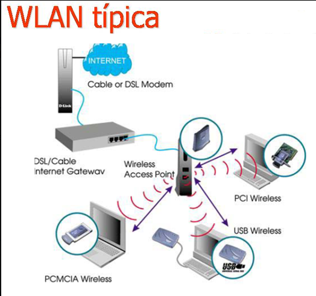
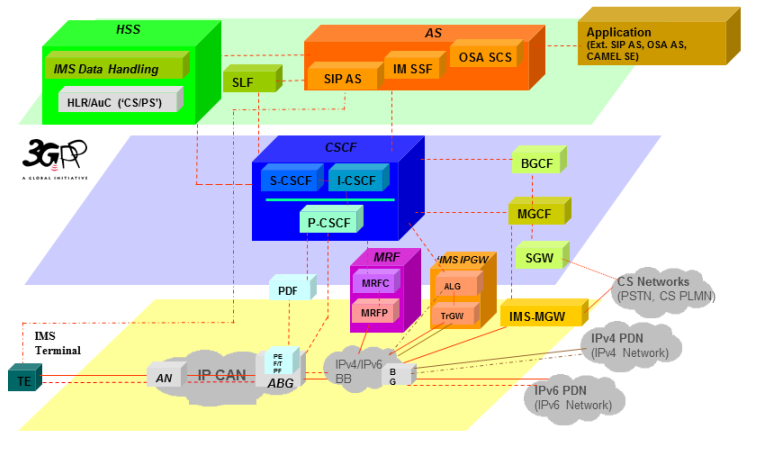

Exploramos la interacción entre redes inalámbricas y el sistema IMS para mejorar la comunicación en redes de próxima generación.
Conexión entre WLAN y IMS: Servicios Multimedia sobre Redes Inalámbricas
Las redes inalámbricas de área local (WLAN) y el Subsistema Multimedia IP (IMS) representan dos pilares fundamentales en la evolución de las telecomunicaciones modernas. WLAN permite la conectividad inalámbrica a internet mediante tecnologías como Wi-Fi, mientras que IMS ofrece una arquitectura estandarizada para la entrega de servicios multimedia, como voz sobre IP (VoIP), videollamadas y mensajería instantánea, sobre redes basadas en IP. Su integración habilita aplicaciones avanzadas accesibles desde cualquier red Wi-Fi, transformando la forma en que interactuamos con servicios de comunicación (Rodríguez & Martínez, 2020).
Desarrollada por el 3GPP (3rd Generation Partnership Project), la arquitectura IMS busca unificar redes móviles y fijas bajo un marco común basado en IP, ofreciendo interoperabilidad y calidad de servicio (QoS). WLAN, por su parte, se basa en el estándar IEEE 802.11 y es omnipresente en hogares, oficinas, universidades y espacios públicos, proporcionando una plataforma ideal para extender los servicios de IMS a entornos diversos. Esta convergencia no solo mejora la experiencia del usuario, sino que también optimiza los recursos de los operadores al aprovechar la infraestructura existente (Gómez, 2021).
WLAN, o red inalámbrica de área local, utiliza ondas de radio para conectar dispositivos a una red sin necesidad de cables físicos. Basada en el estándar IEEE 802.11, comúnmente conocido como Wi-Fi, WLAN permite que dispositivos como smartphones, laptops y tabletas accedan a internet o se comuniquen entre sí dentro de un rango limitado (generalmente hasta 100 metros, dependiendo del entorno y la potencia del punto de acceso). Opera sobre una red IP, lo que la hace compatible con protocolos modernos de comunicación (Gómez, 2021).
Las WLAN se configuran típicamente con un punto de acceso (AP) que actúa como puente entre los dispositivos inalámbricos y la red cableada. Este punto de acceso asigna direcciones IP a los dispositivos mediante DHCP (Dynamic Host Configuration Protocol) y gestiona el tráfico de datos, asegurando conectividad eficiente. Su flexibilidad y facilidad de instalación la convierten en una opción popular en múltiples contextos, desde redes domésticas hasta hotspots públicos en aeropuertos o cafeterías.
El Subsistema Multimedia IP (IMS) es una arquitectura diseñada por el 3GPP para proporcionar servicios multimedia sobre redes IP, reemplazando los sistemas tradicionales basados en conmutación de circuitos. IMS permite la integración de servicios como telefonía VoIP, videollamadas, mensajería instantánea y streaming en un entorno unificado, independientemente de si el usuario está conectado a una red móvil (como 4G/5G) o fija (como WLAN). Su diseño modular y basado en estándares abiertos asegura interoperabilidad entre operadores y tecnologías (3GPP, 2019).
Los componentes principales de IMS incluyen:
IMS utiliza el protocolo SIP (Session Initiation Protocol) para establecer, modificar y finalizar sesiones, y RTP (Real-time Transport Protocol) para transmitir datos multimedia en tiempo real. Este enfoque basado en IP permite una mayor flexibilidad y escalabilidad en comparación con sistemas tradicionales (Rodríguez & Martínez, 2020).
WLAN sirve como una red de acceso que conecta dispositivos a la infraestructura IMS a través de IP. En este modelo, WLAN proporciona la capa física y de enlace, mientras que IMS gestiona la capa de aplicación y servicios. El protocolo SIP juega un papel crucial al permitir que los dispositivos en una WLAN inicien sesiones multimedia, como una videollamada, que son procesadas y enrutadas por los nodos CSCF de IMS. Este proceso asegura que la comunicación sea fluida, segura y de alta calidad, incluso en redes heterogéneas (Rodríguez & Martínez, 2020).
La integración de WLAN e IMS también implica el uso de mecanismos de autenticación avanzados, como el protocolo Diameter, que reemplaza al antiguo RADIUS para verificar la identidad de los usuarios y autorizar su acceso a los servicios. Además, IMS implementa políticas de QoS para priorizar el tráfico multimedia (voz y video) sobre otros datos, como navegación web, lo que garantiza una experiencia óptima en entornos WLAN congestionados (Gómez, 2021).
El proceso de comunicación entre WLAN e IMS sigue un flujo técnico bien definido:
Este flujo permite transiciones fluidas (handover) entre WLAN y otras redes, como 4G, sin interrumpir la sesión, gracias a la capacidad de IMS para gestionar múltiples tipos de acceso (3GPP, 2019).
La integración de WLAN e IMS ofrece múltiples beneficios:
Un usuario en su hogar, conectado a una red WLAN, inicia una videollamada con un colega que está en una oficina usando una red móvil 3G. La WLAN envía los paquetes IP al P-CSCF de IMS, que autentica al usuario mediante el HSS y establece la sesión SIP. El S-CSCF enruta la llamada al destinatario, y la comunicación fluye en tiempo real con alta calidad gracias a las políticas de QoS de IMS. Si el usuario sale de casa y pierde la conexión Wi-Fi, IMS puede transferir la llamada a una red móvil sin interrupciones (Rodríguez & Martínez, 2020).
Otro ejemplo: estás en un café con Wi-Fi público y usas WhatsApp para una videollamada. La WLAN del café transporta los datos a la red IMS del proveedor, que gestiona la autenticación, enrutamiento y QoS, asegurando que la llamada sea clara aunque haya otros usuarios en la misma red. Este escenario demuestra cómo WLAN e IMS colaboran para ofrecer servicios multimedia robustos en entornos cotidianos (Gómez, 2021).
La integración de WLAN e IMS marca un hito en la convergencia de redes inalámbricas y servicios multimedia, transformando las WLAN en plataformas avanzadas más allá del simple acceso a internet. Al combinar la conectividad ubicua y flexible de WLAN con la arquitectura robusta de IMS, se logra una solución que mejora la movilidad, escalabilidad, calidad de servicio e interoperabilidad en las comunicaciones modernas. Esta sinergia no solo beneficia a los usuarios con experiencias más ricas y fluidas, sino que también permite a los operadores optimizar sus redes y prepararse para el futuro de las telecomunicaciones basadas en IP (3GPP, 2019).
3GPP. (2019). IP Multimedia Subsystem (IMS); Stage 2 (TS 23.228). 3rd Generation Partnership Project. https://www.3gpp.org/
Gómez, J. (2021). Redes inalámbricas y servicios multimedia: Una introducción a IMS. Editorial Tecnológica.
Rodríguez, A., & Martínez, L. (2020). Fundamentos de redes IMS. Universidad Nacional Abierta y a Distancia.
Visita las siguientes secciones para profundizar en el tema: